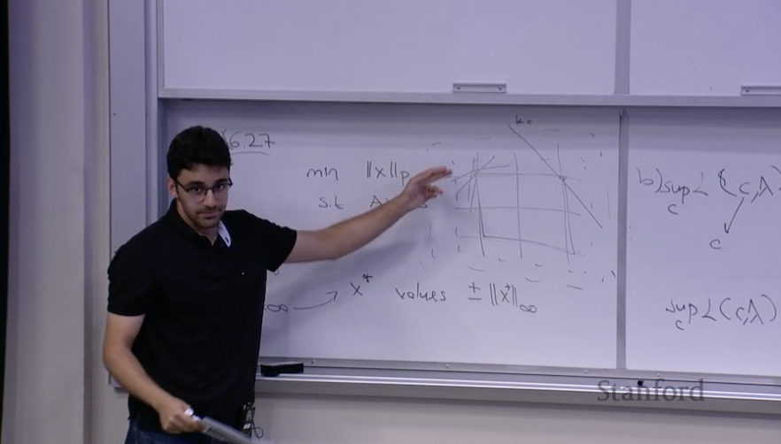

SDT – Space Defense Technologies
Applied Research Intern · Aug–Sep 2025
Conducted conceptual research on visualizing seismic data inspired by Neural Radiance Fields (NeRF),
experimenting with 3D data representations and deep learning based approaches for subsurface imaging.
- Explored how NeRF-style models could be adapted from vision to wave-based sensing for underground layers.
- Worked with synthetic seismic-style data to think about reconstruction, noise, and limited measurements.
- Connected the internship work with my long-term SpeedNeRF project, which aims to bring NeRF ideas to sound waves.

Study Session Instructor, Stanford University
Convex Optimization (EE 364A) · Study Session · 2025
Co-led an exam review session with 3 peers, teaching and reviewing key optimization concepts for the entire class.
- Prepared a structured recap of core convex optimization topics, including duality, Lagrange multipliers, and KKT conditions.
- Explained geometric intuition behind constraints and optimality using whiteboard sketches and examples.
- Answered student questions live and helped connect theory to practical applications in machine learning and control.